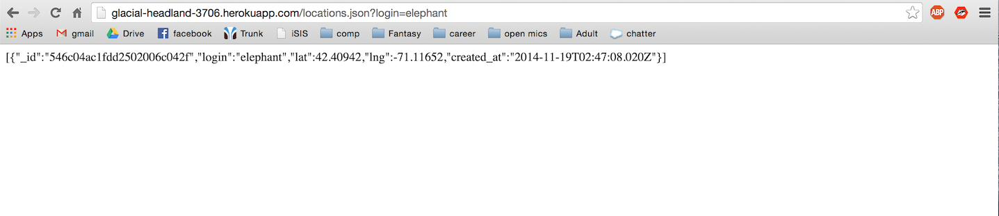
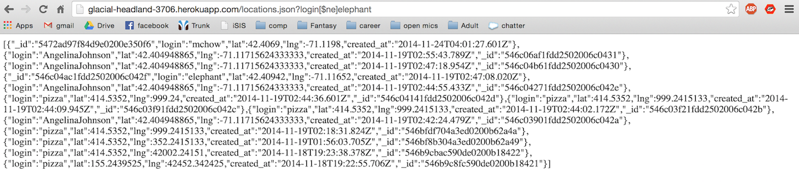
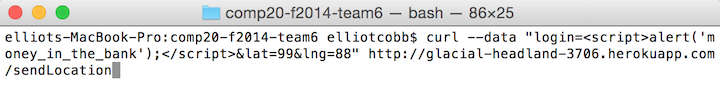
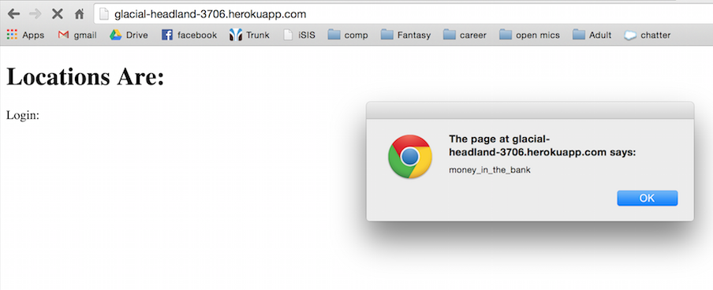
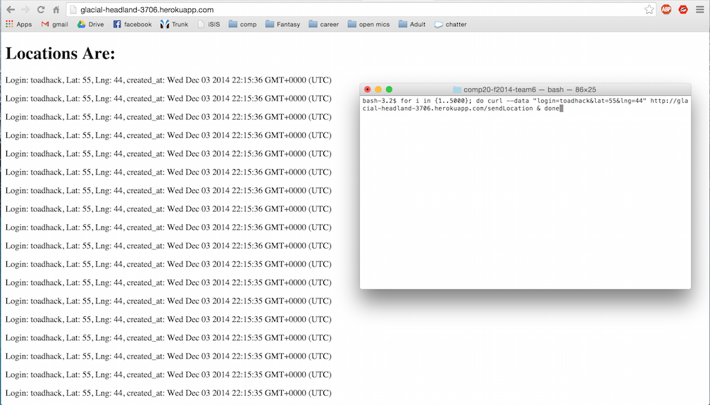

by Elliot Cobb | December3, 2014
Under Attack: http://glacial-headland-3706.herokuapp.com and http://tuftsdev.github.io/comp20-tmaykranz/mmap/
The job is to do black box and white box testing on a Heroku web app. I'll be reading the source code and finding ways to hack the site's database systems as well as get and post methods.
My plan is to try to first try cross site scripting by finding weaknesses in the get and post methods. I know when I did the project, a main hole in my security was that I neglected to scrub my user input for xss. I'm wondering if this app left the same security holes.
Next, I plan on trying database injection. The source code confirms the app uses MongoDB so I'll try injecting some code to display database documents.
The app also uses a CORS wildcard (*) so I'll manipulate that and then try to overload the database.
The tools I'll be using are cURL requests. I can send post requests to the /sendLocation directory. Using bash, I can also overload the server with thousands of cURL requests. Finally, I can use javascript XSS to manipulate the nodeJS-run web server.
The first security hole I found was that outside users can inject code into the web app and manipulate it from the outside. This can happen in the /sendLocation directory and the /locations.json directory. When the web app takes input from the user without scrubbing it for unusual characters, a user can input harmful code instead of their login that the web app will unknowingly run.
Also, the web app doesn't check for invalid latitudes and longitudes in the /sendLocation directory.
Finally, the app doesn't protect against system overloads. I was able to keep the server busy with thousands of unwanted requests so normal user requests could not be handled. Also, the database could be overloaded by this process.
/locations.json
High - In this case, the database only held users' locations and timestamps, but if a user were to store their credit card number, it could be stolen very easily.
I tried using a not equal operator ([$ne]) in the /lcations.json directory. If you enter a login that is not in the database, the entire database will be shown on the page.
MongoDB login equal to elephant (normal use case)
MongoDB login not equal to elephant ([$ne] hack). All of database exposedI would specify in the code that only the equals operator can be used in the get method.
/sendLocation
Medium - The site could be stalled or annoying pop ups could be called, but this is less serious than exposing an entire database.
When doing a post request like that from the marauder's map, the user can make the parameters javascript code and the web app will run the code without checking it for suspicious characters. I did some harmless alerts, but more devious code can be run.
I used this cURL request with the embedded script code to cause an alert in the web app
The alertI would recommend scrubbing the all user input and unencoding all non-alphanumeric characters. This way no script tags will disrupt the code.
/locations.json
Medium - an overload attack could bring down the entire server or database, but no permanent damage would be done.
I made a simple bash loop that would send thousands of post requests to the server. The server took several seconds to deal with the requests. In that time, legitimate requests would have had to wait. Also, the script could send an unlimited number of requests that would bring down the server or overload the Mongo database.
bash request for 5000 posts
I would track domains that are posting and limit the number of posts from one domain
all directories
Low - there isn't too much danger in letting all domains access this web app. For the app to work, you need to have most people access it, but having the domains open to all opens the door to all the above get and post based attacks.
Using the CORS wildcard lets any domain access the site. If there was a specific group of people who should be accessing the site (like only poeple in Boston) then the wild card could be removed. Otherwise, the site should just protect itself from attacks from any domain.
Limit the scope of people who can do get and post to the site or just shore up other security holes.
In general, this web app needs to be more careful with user data. Both the injection issues could be easily solved by scrubbing user input. The overload issue is trickier. I would try monitoring the amount of posts and gets from certain high frequency domains and setting a max number of calls per domain. Finally, CORS should be limited to secure domains if this site is to be truly secure.